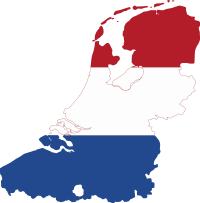
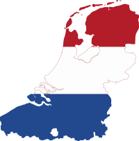

Amando programar!
Revisando antes de passar para o próximo assunto.
Coloca a imagem na pasta e aperta img
 

Colocando o simbolo no site com o favicon
Para negrito a tag é strong
Para italico usa a TAG em
Para marcar um texto usa a tag mark
Para marcar um texto de outra cor usa o mark e o CSS style
Para deixar a letra pequena usar a tag small
Ele não quer ir, diz ele.
Voce tambem pode botar ao quadado 202
ou colocar em baixo H2O com as tags sup ou sub